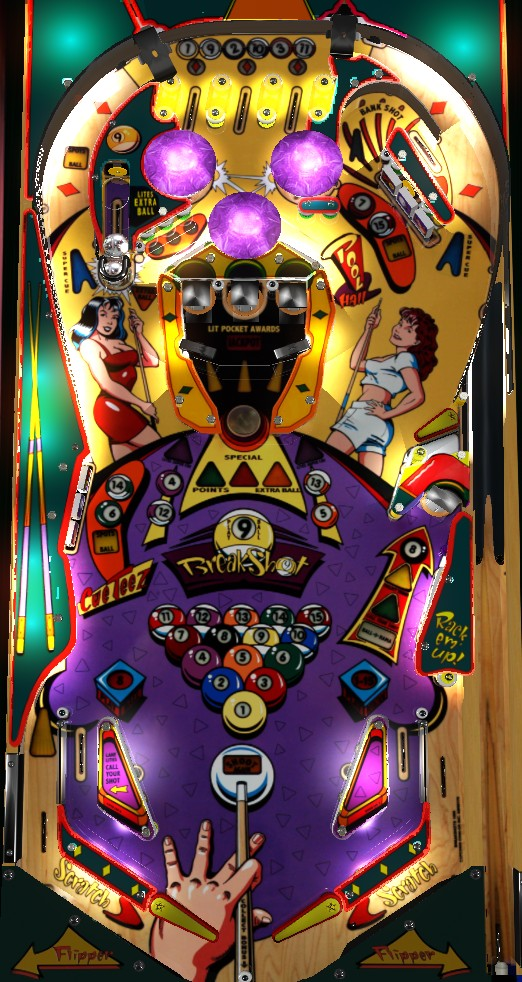

All of Breakshot's points are found in Cutthroat Countdown, which is technically a wizard mode but is far easier to reach than most wizard modes. To play Cutthroat Countdown, win games of 8 Ball, 9 Ball, and Rotation by shooting lit pool balls, or having them spotted from Super Cue on lit orbits (the center standup targets light Super Cue orbits). During Cutthroat Countdown, continue to shoot lit pool balls for 1,000,000 each, then shoot the center lock pocket for a super jackpot when you get them all or time expires. Multiball should be used only to collect lit pool balls toward qualifying or completing Cutthroat Countdown.
If Cutthroat Countdown is disabled in the game's software, start multiball to acitvate playfield multipliers and shoot Bank Shot loops or Bankshot Bonus combos (left orbit -> Bank Shot loop).
The skill shot is a short plunge that puts the ball on the upper right flipper. Making the Bank Shot mini-loop scores 100,000 points, and keeps the Bank Shot lit, with each consecutive loop around the Bank Shot scoring 100,000 points more than the previous one until you miss.
If the right orbit is not lit for Super Cue, a full plunge will put the ball into the top lanes. The three top lanes correspond to the 1/9 ball, the 2/10 ball, and the 3/11 ball. Each top lane also has a diamond insert. Making a top lane with a flashing diamond will light it solidly; lighting all three diamonds resets them and advances the bonus multiplier. If there is a maximum bonus multiplier, it is at least 51x. If the diamonds are not lit or flashing, it is not possible to earn bonus multipliers (this is the case during Cutthroat Countdown). Lit or flashing diamonds can be moved with flipper lane change, but lit pool balls at the top lanes cannot be moved.
If the right orbit is lit for Super Cue, a full plunge will score the Super Cue award, spot one pool ball in the current game, and send the ball flying down the left orbit with considerable speed.
The main modes of Breakshot are pool games, and there is always one in progress. When a pool game is completed, the next game starts automatically. There are three "main" pool games: Eight Ball, Nine Ball, and Rotation. Main games are always played in the order Eight Ball, Nine Ball, Rotation, Nine Ball, repeat. After every main game is completed starting with the 3rd, a Cutthroat Countdown round begins, which is described in the next section. Below are the rules to the three main pool games.
Eight Ball
The game will randomly assign you Solids or Stripes, which changes whether the 1-7 inserts or 9-15 inserts are lit, but this is purely cosmetic and does not change the mode's gameplay. Collect the 7 main pool balls first in any order, then shoot the 8 ball saucer in the middle right to complete. Pool balls are collected at:
Pool balls can be spotted during Eight Ball via the Super Cue feature. Hitting the 4/12 target lights the right orbit Super Cue, and hitting the 5/13 target lights the left orbit Super Cue. When an orbit is lit for Super Cue, a full shot to that orbit scores 60,000 points and spots one pool ball. If you make consecutive shots to the same orbit without missing, each additional shot spots another pool ball and scores 60,000 more points than the previous. If you miss, the orbit unlights and must be requalified with another hit to the 4/12 target or 5/13 target. If both Super Cue orbits are lit, shooting either orbit spots 2 pool balls, but only gives the points of one Super Cue.
Pool balls can also be spotted with repeated shots to the Bank Shot mini-loop, or with any shot to a center lock pocket.
Nine Ball
Nine Ball does not use the individual numbered ball shots like Eight Ball does: instead, look for the yellow square inserts that read Spots Ball. To spot a ball in Nine Ball, shoot either orbit, the captive ball, or the standup target behind either drop target bank. A total of 9 shots to any of these features will complete the game.
During Nine Ball, the center lock pocket is lit for Nine Ball Bonus, which alternates between Points (250,000), Extra Ball, or Special (only on the second game of Nine Ball).
Rotation
Rotation follows similar rules as Eight Ball regarding scoring and spotting pool balls: however, in Rotation, you must specifically earn the 1 through 15 balls in order. Super Cue is still available during Rotation and will likely become your best friend. Balls can also still be spotted at the Bank Shot or center pockets.
Completing a main pool game scores 100,000 points times the number of main pool games you have completed, and automatically starts either the next game in order (for the first two games) or a Cutthroat Countdown (from main game #3 onwards).
Making the left in lane during a main pool game briefly lights the 8 ball saucer for Call Your Shot. If you shoot the 8 ball saucer when Call Your Shot is lit, you will be asked to choose between the left orbit, right orbit, or center lock pocket. Then, the ball will be kicked out of the 8 ball saucer. If you successfully hit whichever shot you called without hitting any extraneous switches along the way, the entire current main pool game will be completed for you.
Cutthroat Countdown is effectively the wizard mode of Breakshot, but it is easy enough to reach that a good game should expect to earn the Cutthroat Countdown Super Jackpot multiple times. Cutthroat Countdown also has Eight Ball, Nine Ball, and Rotation variants. Every odd numbered Cutthroat Countdown (1st, 3rd, etc.) is Nine Ball; every 4th Cutthroat Countdown is Rotation; the rest (2nd, 6th, etc.) are Eight Ball. This has minimal effect on the mode itself other than its length.
Cutthroat Countdown is a timed mode that begins with 1:00 on the clock. The game will prompt you to hit either the 1 or 9 ball to start. If you collect that pool ball, you score 1,000,000 points, 10 seconds is added to the mode timer, and the next pool ball is lit. If ten seconds pass without making a lit pool ball, the game will move on to the next ball automatically. Eight Ball Cutthroat Countdown wants you to sink 1 through 7 or 9 through 15 in order, than 8; Nine Ball wants you to sink 1 through 9 in order; and Rotation wants you to sink 1 through 15 in order. The game will loop back around to balls that were missed the first time through if there is time remaining. To collect a 6/7/14/15 ball, you need to clear the corresponding drop target bank, but you do not need to hit the standup target behind the drops. When the timer expires, Super Jackpot is lit as long as you sunk at least one ball during Cutthroat Countdown. Super Jackpot is scored at the center lock pocket, does not have a timer, and has a value of 2,000,000 points times the number of balls sunk during that Cutthroat Countdown. The Super Jackpot can score as much as 16,000,000 points in Eight Ball, 18,000,000 in Nine Ball, or 30,000,000 in Rotation.
If you drain at any point during Cutthroat Countdown, including while the Super Jackpot is lit, you will continue where you left off on your next ball. If the timed portion of Cutthroat Countdown ends with no balls sunk, or if you collect a Super Jackpot that is not at the maximum value, you will automatically start the next main game in sequence, and completing that main game will start the next Cutthroat Countdown. If you collect a Super Jackpot after sinking all of the available pool balls in a Cutthroat Countdown playthrough, the game will start the next Cutthroat Countdown immediately, with a multiplier applied to all Cutthroat Countdown scoring for the rest of the game (2x if you've scored one maximum Super Jackpot, and 3x if you've scored two or more), which includes the 1,000,000 sink bonus and the Super Jackpot.
When the Super Jackpot is lit during Cutthroat Countdown, all balls in the center lock pockets are kicked out. This does start a multiball, but it does not come with the 2x or 3x playfield that would be available if you started Ball-o-Rama Multiball or Breakshot Frenzy Multiball the normal way. However, Ball-o-Rama or Breakshot Frenzy can run alongside Cutthroat Countdown if the multiball in question is started before, or during the timed phase of, Cutthroat Countdown. In this case, the 2x or 3x playfield will apply to the 1,000,000 bonus for sinking a Cutthroat pool ball, but it will not apply to the Super Jackpot. The playfield multiplier from multiball stacks with any earned Cutthroat Countdown multipliers, so it's possible for a single sunk pool ball to score 9,000,000 points if Breakshot Frenzy and Cutthroat Countdown are running together and at least two maximum value Cutthroat Super Jackpots have been previously earned.
Locking balls for multiball is done at the center structure, which contains three saucers referred to as "pockets". Shooting the ball into this area causes the post at the entrance to raise. If the ball settles in the center pocket, a 30,000 point Good Shot is scored, and the ball is ejected, where it is trapped by the raised post. If the ball does not settle into the center pocket, you do not score the points, but the ball remains trapped. While a ball is resting against the post, look for the arrows pointing at the left and right pockets: no arrow is an unqualified lock, a flashing arrow is a qualified lock, and a solidly lit arrow means a ball is locked in that pocket. Hit the post to knock the ball backwards into the left or right pocket depending on where it is resting. If the ball is knocked into an unlit pocket, it will be ejected and that pocket's lock will be qualified. If the ball is knocked into a flashing pocket, it will be locked for multiball and a 100,000 point Trick Shot is scored. If the ball is knocked into a pocket where a ball is already locked, a one-way diverter within the center structure will direct it to the other side of the blocker post, where it can be knocked into a different pocket. If there are 2 balls resting against the center post and both the left and right locks are qualified- which can happen after Call Your Shot is scored- knocking both balls into the nearby pockets at once scores 2 pool balls for the current game and a 250,000-point Nice Combo. Up to 2 balls can be locked this way. When exactly 1 ball is locked, the 8 ball saucer is lit for Ball-O-Rama 2-ball multiball. When exactly 2 balls are locked in the left and right lock pockets, the center lock pocket is lit for Breakshot Frenzy 3-ball multiball. Also, shooting any lock pocket during any main game will spot a pool ball toward the completion of Eight Ball, Nine Ball, or Rotation.
During Ball-O-Rama, jackpots are available at the 8 ball saucer, and all other playfield scoring is doubled (except for Cutthroat Super Jackpots). The jackpot starts at 100,000 points and increases by 10,000 for every second that there are two balls in play, with no limit that I have encountered. Collecting the jackpot does not reset the value. If no switches are hit anywhere on the playfield for 5 seconds, the jackpot will stop growing, so as to prevent someone from holding both balls on the flippers and letting the jackpot grow forever.
During Breakshot Frenzy, jackpots are available at the center lock pocket, and all other playfield scoring is tripled if there are 3 balls in play and doubled if there are 2 balls in play (except for Cutthroat Super Jackpots). Jackpots start at 200,000 points and increase by 5,000 every second that there are at least two balls in play (pausing if no playfield switches are registered in 5 seconds). The first two jackpots are available immediately; after that, it takes one center pocket shot to light each jackpot, and a second one to score it. Collecting the jackpot does not reset the value. If a second ball is shot into the lock structure within 1 second of a ball settling into the center pocket, a double jackpot is scored, worth 2x the current jackpot value. There is no triple jackpot available. After a certain number of regular jackpots are scored during Breakshot Frenzy- default is 4- the next jackpot is a Super Jackpot, worth 2x the current jackpot value. I am unsure if a double super jackpot is possible.
The Bank Shot is the mini-loop in the top right of the game. When not lit, this loop scores 10,000 points. Immediately after making the loop, it will light. Consecutive shots to the Bank Shot score an increasing value until you miss: 100,000 points for the second shot, increasing by 100,000 for each further shot. Making two or more consecutive shots to the Bank Shot also spots a pool ball each time if the current game is Eight Ball or Rotation.
Hitting the 4/12 or 5/13 standup targets on either side of the lock structure will light the right or left Super Cues respectively. Making an orbit lit for Super Cue scores 60,000 points, spots a pool ball in any main game, and causes that orbit to start flashing. Consecutive shots to that same orbit without missing will each score an additional pool ball, and are also worth 60,000 more points than the previous Super Cue shot. Super Cue cannot be lit during Cutthroat Countdown; if you start Cutthroat Countdown while a Super Cue is lit, you can get the points from that Super Cue but it will not spot a pool ball. If both Super Cue orbits are lit, making either one will spot 2 pool balls but will still only award the normal Super Cue score. Making a left Super Cue orbit immediately followed by a right Super Cue orbit or vice versa scores a Super Cue Capcombo, worth 250,000 points and a lit extra ball at the captive ball.
Making any left orbit Super Cue advances the value of the Bankshot Bonus. The first advance qualifies Bankshot Bonus at the value of 50,000 points; further left Super Cue orbits, whether consecutive or not, will each double the Bankshot Bonus value, up to six doubles for a maximum value of 3,200,000 points. To score the Bankshot Bonus value, make a left orbit -> Bank Shot loop combo. Scoring the Bankshot Bonus value resets it, with the next left Super Cue qualifying the Bonus at 50,000 once again. The Bankshot Bonus value is scored in addition to the normal points that would be scored from the Bank Shot.
A partial shot to the captive ball scores 3,000 points. A full shot to the captive ball scores 30,000 points and advances the green lights near the captive ball and the bumpers. After a certain number of captive ball hits (default 4), the next hit to the captive ball will score an extra ball. When the extra ball is scored, the captive ball progress resets, and it will take one further shot to earn another extra ball. The default setting is that only one extra ball can be earned from the captive ball per game, but this limit can be adjusted to anywhere from 0 to 99. Once the maximum number of extra balls has been earned from the captive ball, any further captive ball shots will score a Moose Award, which is worth 50,000 points the first time and increasing by 10,000 each subsequent time up to a maximum of 1,000,000 points.
Breakshot has a conventional in/out lane setup. In lanes score 3,000 points; the left in lane briefly lights the 8 ball saucer for Call Your Shot, which can be used to instantly complete a pool game. The right in lane does not light any additional features. The out lanes score 30,000 points. The left out lane has a kickback. Completing either drop target bank in sequence in either direction adds 1 use of the kickback. Depending on game settings, anywhere from 1 to 99 uses of the kickback can be stored at one time. The right out lane does not include any type of save feature. There is a small center post between and below the flippers.
Base bonus is calculated as 10,000 points, plus an additional 10,000 for any ball sunk in any pool game (including Cutthroat Countdown, I believe) over the course of the entire game. Bonus multiplier is advanced by 1 toward a maximum of 99x by solidly lighting all 3 top lanes during any main pool game. Bonus multiplier is never held from ball to ball, but base bonus always is. Bonus can be collected mid-ball only once per ball by shooting the 8 ball saucer; the bonus collect is lit at the start of each ball, but only if at least one pool ball has been sunk this game. End of ball bonus is not very meaningful, only because bonus multipliers cannot be earned during any Cutthroat Countdown.
Specials and extra balls can be set to points within the game settings, but I have not been able to confirm their exact point values.
Lane change for the top lane diamonds toward earning bonus multipliers can be disabled.
The first captive ball extra ball can require anywhere from 1 to 7 captive ball hits, default is 4. The maximum number of extra balls that can be earned this way in a game can be anywhere from 0 to 99, default is 1.
The kickback can be on at the start of every ball, on at the start of the game with memory, or off at the start of every ball. Max kickbacks stacked can be from 0 to 99; default is 1. Presumably, setting this to 0 would completely disable the kickback.
Ball save at the start of a ball can be anywhere from 0 to 60 seconds; default is 8. A brief ball saver, lasting 4 seconds or until a switch is hit, is enabled after the ball enters a lock pocket, to prevent center drains from weak kickers; this can be disabled.
The number of "easy" jackpots during Breakshot Frenzy (i.e. jackpots lit for free instead of needing to be qualified) and the number of jackpots required for a Breakshot Frenzy super jackpot can be adjusted to as many as 99.
The 9 Ball Special becomes available the second time that Nine Ball is played. This can be adjusted to Nine Ball game 1 through 10, or it can be disabled.
The number of pool games required for the first Cutthroat Countdown can be set to 0 to 99. If set to 0, Cutthroat Countdown can never be played; in this case, strategy should shift to scoring Bank Shot loops and high Bankshot Bonuses during a multiball when playfield multipliers are active.